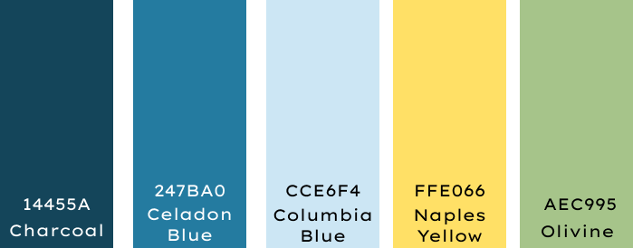

reVamp colour palette
We have decided to use these 5 colours for our primary colours as they all represent sustainability. The colour blue symoblizes both the sky and the sea, whereas the colour green symbolizes nature and the natural world. Likewise, the colour yellow symolizes enlightenment and creativty which is what our goal is for our app, to enlighten and educate people about sustainability while providing them ways to repurpose their old clothing in a creative way.
Primary Colours
header
background
buttons
Our secondary colours include gold metalc and teal grey. These will be used for other items like the button and background border. This will add a pop of colour into our application.
Secondary Colours